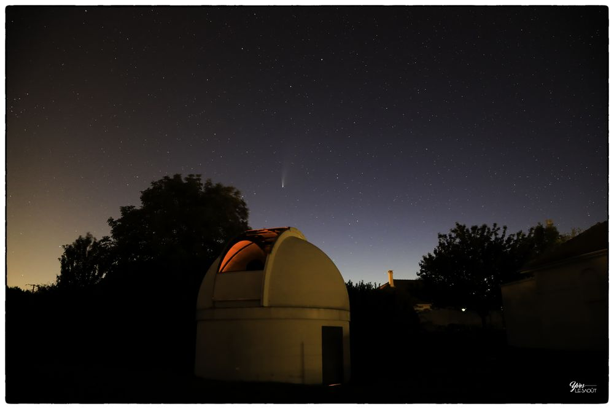

PlanétiCA est une association des passionnés d'astronomie.
L'association organise des visites et observation publique à l'observatoire de Beine-Nauroy.
Nous réalisons des manifestations publiques gratuites comme la Nuit des étoiles ou lors d'évènements
astronomiques remarquables (observation d'éclipse, de comètes).
Si le temps le permet, des observations du ciel nocturne sont effectuées les vendredi soirs.
De plus l'association permet à ses membres de se rencontrer et échanger autour des techniques de
l'astronomie, l'astrophotographie ou encore le dessin d'objets célestes.

L’observatoire est équipé d’un télescope de 410 mm F/6.
D'autres instruments disponibles sur place:
- Un Schmidt-Cassegrain altazimutal GPS de 250 mm.
- Un Schmidt-Cassegrain altazimutal de 200 mm.
- Une lunette apochromatique de 102 mm.
- Plusieurs petits instruments (lunettes de 60 mm, télescope de 115 mm – deux télescopes solaires
avec filtre H alpha type Coronado).
Pour les observations nocturnes, il y a possibilité de couper l’éclairage public du quartier